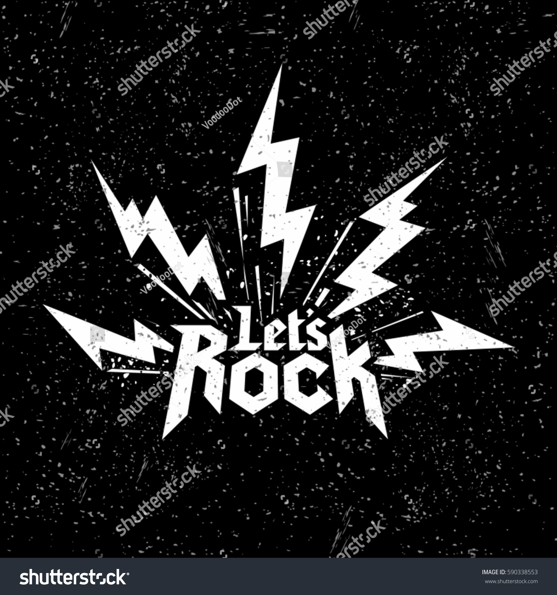

Exemplos de Listas no HTML
Listas Não Ordenadas
- Desenvolvimento Web - Back-End
- Desenvolvimento Web - Front-End
- Interfaces Web (HTML e CSS)
- Inteligencia Artificial e ChatBot
- Libras
- Marketing
Listas Ordenadas
- HTML
- CSS
- JavaScript (Front)
- Node.JS (JavaScript - Back)
- PHP
- C
- C++
- Java
- H2O
- 23
Listas Encadeadas
Inserir Imagens
